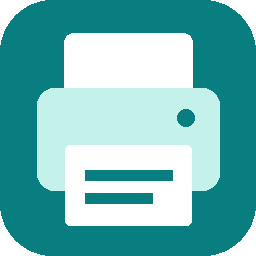

ربط الموقع بهذه الحاسبة
افتح «الطابعات لهذا الجهاز» داخل Digital Lab، ثم أدخل الرمز ووافق على اسم موقعك هنا.
الرمز صالح لخمس دقائق ولمرة واحدة.إغلاق هذه النافذة يبقي المساعد بجانب الساعة. اختر «إنهاء» من أيقونته لإيقافه.

طابعاتك جاهزة من مكان واحد
افتح «الطابعات لهذا الجهاز» داخل Digital Lab، ثم أدخل الرمز ووافق على اسم موقعك هنا.
الرمز صالح لخمس دقائق ولمرة واحدة.إغلاق هذه النافذة يبقي المساعد بجانب الساعة. اختر «إنهاء» من أيقونته لإيقافه.